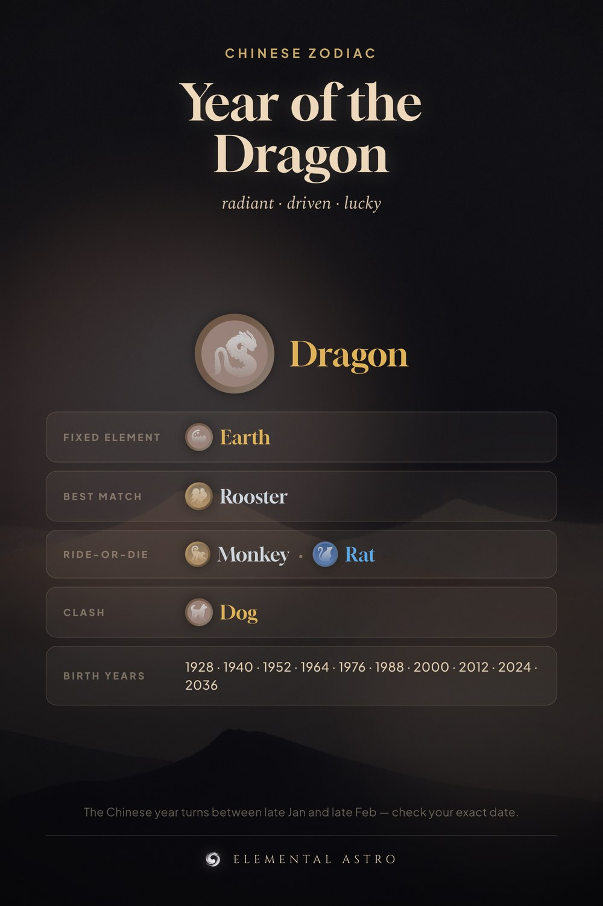

Born in the year of the Dragon? Your sign is radiant, driven, lucky, and its fixed element is Earth. Your steadiest match is the Rooster, your ride-or-die trio is the Monkey and the Rat, and the Dog is the one sign that will never let you coast. Dragon birth years: 1928, 1940, 1952, 1964, 1976, 1988, 2000, 2012, 2024, 2036. Chinese zodiac dragon, dragon personality, Chinese zodiac compatibility.
https://www.elementalastro.io/learn/chinese-zodiac/dragon